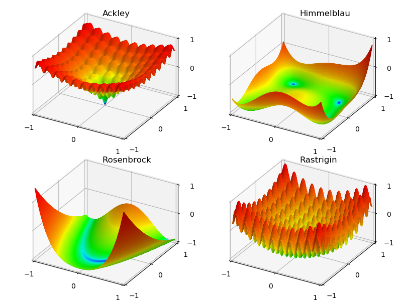

Function Plots, z = f(x,y)¶
These examples show the basic functional plotting using:
one code statement to create a surface object, one code statement to create the surface geometry and one code statement to color the surface. Finally, one code statement to add that object to a Matplotlib 3D axis.
Also, several functions were used to demonstrate:
a functional relationship should look like a function
The functions are given on the Wikipedia page Test functions for optimization.
import numpy as np
import matplotlib.pyplot as plt
import s3dlib.surface as s3d
import s3dlib.cmap_utilities as cmu
#.. Function plots, z = f(x,y)
# 1. Define functions to examine ....................................
# all functions normalized into the domain [-1.1]
def Ackley(xyz) :
x,y,z = xyz
X,Y = 5*x, 5*y
st1 = -0.2*np.sqrt( 0.5*( X*X + Y*Y) )
Z1 = -20.0*np.exp(st1)
st2 = 0.5*( np.cos(2*np.pi*X) + np.cos(2*np.pi*Y) )
Z2 = -np.exp(st2) + np.e + 20
Z = Z1 + Z2
return x,y, Z/8 - 1
def Himmelblau(xyz) :
x,y,z = xyz
X,Y = 5*x, 5*y
Z1 = np.square( X*X + Y - 11 )
Z2 = np.square( Y*Y + X - 7 )
Z = Z1 + Z2
return x,y, Z/500 - 1
def Rosenbrock(xyz) :
x,y,z = xyz
X,Y = 2*x, 2*y+1
Z1 = np.square( 1 - X )
Z2 = 100*np.square( Y - X*X )
Z = Z1 + Z2
return x,y, Z/1000 - 1
def Rastrigin(xyz) :
x,y,z = xyz
X,Y = 5*x, 5*y
Z = 20 + X*X + Y*Y - 10*np.cos(2*np.pi*X) - 10*np.cos(2*np.pi*Y)
return x,y, Z/40 - 1
# ..........................
def nonlinear_cmap(n) :
# assume -1 < n < 1, nove to domain of [0,1]
N = (n+1)/2
return np.power( N, 0.1 )
# 2 & 3. Setup surfaces and plot ....................................
rez=6
cmap = cmu.hsv_cmap_gradient( 'b' , 'r' , smooth=0.8)
funcList = [ Ackley, Himmelblau, Rosenbrock, Rastrigin ]
minmax, ticks = (-1,1), (-1,0,1)
fig = plt.figure(figsize=(8,6))
for i in range(4) :
# setup surfaces .......
surface = s3d.PlanarSurface(rez,basetype='oct1')
surface.map_geom_from_op(funcList[i])
surface.map_cmap_from_op(lambda xyz : nonlinear_cmap(xyz[2]), cmap ).shade(.5)
# ......................
ax = fig.add_subplot(2,2,1+i, projection='3d')
ax.set(xlim=minmax, ylim=minmax, zlim=minmax )
ax.set_title(funcList[i].__name__, fontsize='large', horizontalalignment='left')
ax.set_xticks(ticks)
ax.set_yticks(ticks)
ax.set_zticks(ticks)
ax.set_proj_type('ortho')
ax.view_init(40)
ax.add_collection3d(surface)
fig.tight_layout()
plt.show()